Nilgata Rice
- Niigata Prefecture boasts astounding natural beauty. Looking out over the Sea of Japan to the West and surrounded by majestic mountains on its other three sides, lush rice fields fan out over the region's serene landscape. Niigata is known throughout Japan's biggest harvest of rice, which is essential to Japanese cuisine. Koshihikari, Niigata's most celebrated variety of rice, is famous throughout Japan for its taste.
- Large variations in temperature between night and day, the fertile soil of the Echigo Plain, and the pristine melting snow that feeds into the rice paddies create a natural environment ideal for nurturing Niigata's exquisite rice. Koshihikari in particular benefits from this environment as a resilient and savory rice variety with a delicate sweetness all its own.
- When freshly cooked, it is fragrant, fluffy and tasty enough to be eaten on its own right out of the rice cooker.